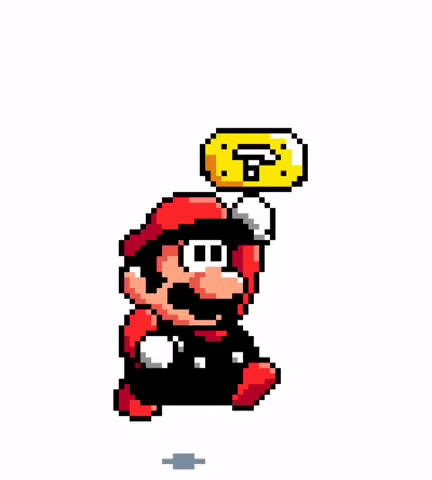
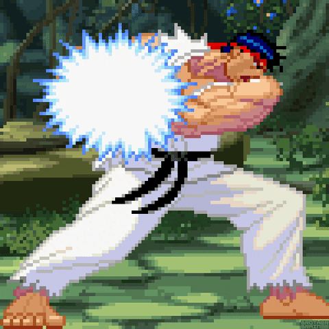

Super Mario

Super Mario is a platform game series created by Nintendo starring their
mascot, Mario. Alternatively
called the Super Mario Bros. series or simply the Mario series, it is the central series of the
greater
Mario franchise. At least one Super Mario game has been released for every major Nintendo video game
console. There are more than 20 games in the series.
The Super Mario games are set primarily in the fictional Mushroom Kingdom,
typically with Mario as the
player character. He is usually joined by his brother, Luigi, and often by other members of the
Mario
cast. As platform games, they involve the player character running and jumping across platforms and
atop
enemies in themed levels. The games have simple plots, typically with Mario and Luigi rescuing the
kidnapped Princess Peach from the primary antagonist, Bowser. The first game in the series, Super
Mario
Bros., released for the Nintendo Entertainment System (NES) in 1985, established the series' core
gameplay concepts and elements. These include a multitude of power-ups and items that give the
character
special powers such as fireball-throwing and size-changing.
The Super Mario series is part of the greater Mario franchise, which
includes other video game genres and media such as film, television,
printed media, and merchandise. More than 380 million copies of Super Mario games have been sold
worldwide, making it the fifth-best selling video game series, behind the larger Mario franchise,
the
puzzle series Tetris, the series Pokémon video games, and first-person shooter series Call of Duty.
Street Fighter

Street Fighter, commonly abbreviated as SF or スト (Suto), is a Japanese media
franchise centred on a series of fighting video and arcade games developed and published by Capcom. The
first game in the series was released in 1987, followed by six other main series games, various
spin-offs and crossovers, and numerous appearances in other media. Its best-selling 1991 release Street
Fighter II established many of the conventions of the one-on-one fighting genre.
Street Fighter is one of the highest-grossing video game franchises of all time and is one of Capcom's
flagship series with total sales of 48 million units worldwide as of June 2022. It is the
highest-grossing fighting game media franchise of all time at US$12.2 billion, including 500,000 arcade
unit sales.